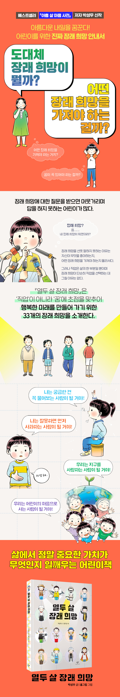

앵커만들기
top
책소개
아름다운 내일을 꿈꾼다!
어린이를 위한 진짜 장래 희망 안내서
베스트셀러 『아홉 살 마음 사전』 저자 박성우 신작
어린이를 위한 장래 희망 안내서 『열두 살 장래 희망』이 출간되었다.
‘직업’이 아니라 ‘꿈’에 초점을 맞추어 행복한 미래를 만들어 가기 위한 33개의 장래 희망을 소개한다.
아름다운 내일을 상상하면서 색다른 꿈을 계획해 보는 것은 물론,
다른 사람들과 함께 행복하게 살아가는 방법을 고민해 볼 수 있다.
구체적이고 담백한 박성우 시인의 글과 사실적이고 유머러스한 홍그림 작가의 그림이 어우러지며
어린이들이 장래 희망을 상상하고 미래를 설계하는 데 도움이 될 것이다.
top
목차
무엇이든 잘 고치는 사람
엉뚱한 상상을 많이 하는 사람
운전을 잘하는 사람
비밀을 잘 지키는 사람
자전거를 잘 타는 사람
잘못하면 먼저 사과하는 사람
궁금한 건 꼭 물어보는 사람
주사를 잘 맞는 사람
다리가 튼튼한 사람
편지를 자주 쓰는 사람
백과사전처럼 아는 게 많은 사람
잘 우는 사람
잘 웃는 사람
약속을 잘 지키는 사람
별을 보러 다니는 사람
취미가 여러 가지인 사람
친구들을 위해 먼저 나서는 사람
솔직한 사람
식물 이름을 많이 아는 사람
요리를 좋아하는 사람
고민을 잘 들어주는 사람
여러 가지 악기를 다루는 사람
여행을 자주 다니는 사람
반말하지 않는 사람
잘난 척하지 않는 사람
아침에 일찍 일어나는 사람
곤충에 대해 잘 아는 사람
예술을 가까이하는 사람
고마워할 줄 아는 사람
귀 기울이는 사람
소원이 많은 사람
지구를 사랑하는 사람
어린이의 마음으로 사는 사람
top

top
저자소게
1971년 전북 정읍에서 태어났습니다. 원광대 문예창작학과를 졸업하고 같은 대학원 박사과정을 수료했다.
2000년 중앙일보 신춘문예에 시 「거미」가 당선되고, 2006년 한국일보 신춘문예에 동시가 당선되며 아동문학을,
2009년 한국간행물윤리위원회 청소년저작 및 출판 지원사업에 청소년시가 당선되면서 청소년문학을 시작했습니다.
걷는 것을 좋아하는 시인이다. 책을 통해 독자들의 마음에 한 발짝 더 다가서고 싶습니다.
시집 『거미』, 『가뜬한 잠』, 『웃는 연습』, 『자두나무 정류장』,
동시집 『불량 꽃게』, 『우리 집 한 바퀴』, 『동물 학교 한 바퀴』,
박성우 시인의 첫말 잇기 동시집』, 『박성우 시인의 끝말잇기 동시집』,
『삼행시의 달인』, 청소년시집 『난 빨강』, 『사과가 필요해』,
그림책 『암흑 식당』, 『소나기 놀이터』, 『나의 씨앗 할아버지』,
어린이책 「아홉 살 사전」 시리즈, 청소년책 「사춘기 사전」 시리즈,
어른을 위한 동화 『컵 이야기』, 산문집 『박성우 시인의 창문 엽서』,
『마음 곁에 두는 마음』, 청소년 시집 『난 빨강』 등을 냈습니다.
신동엽문학상, 윤동주젊은작가상, 백석문학상 등을 받았습니다.
top
출판사 리뷰
"장래 희망이 뭘까요? 어떤 장래 희망을 가져야 할까요?"
어린이를 위한 진짜 장래 희망 안내서
『아홉 살 마음 사전』으로 많은 독자의 마음을 사로잡은 박성우 시인이 어린이를 위한 장래 희망 안내서를 선보인다.
현재를 살아가는 초등학생 중에는 멋진 장래 희망을 간직한 어린이도 있지만 장래 희망에 대한 질문을 받으면 머뭇거리며 답을 하지 못하는 어린이가 많다.
장래 희망을 선뜻 말하지 못하는 이유는 자신이 무엇을 좋아하는지, 어떤 장래 희망을 가져야 하는지 몰라서다.
어린이들은 장래 희망을 고민할 때 운동선수, 요리사, 대통령, 과학자, 가수, 소방관, 우주 비행사 등 여러 가지 직업을 떠올리곤 한다.
그러나 직업은 삶의 한 부분일 뿐이며, 장래 희망이 단순히 직업을 선택하는 데 그칠 이유는 없다.
그래서 저자인 박성우 시인은 ‘요리를 좋아하는 사람’ ‘별을 보러 다니는 사람’ ‘취미가 여러 가지인 사람’
‘여행을 자주 다니는 사람’ ‘운전을 잘하는 사람’ ‘여러 가지 악기를 다루는 사람’ 등 자신이 좋아하는 것을 찾아서 즐겁고 행복하게 살아가는 미래를 장래 희망으로 제시한다.
저자가 제시하는 장래 희망은 직업이 아니므로 여러 가지 장래 희망을 동시에 꿈꿀 수 있다.
어린이들은 『열두 살 장래 희망』을 통해 장래 희망이란 단순히 직업이 아니라 어떤 ‘사람’이라는 것을 깨닫고,
더 구체적이고 아름다운 장래 희망을 꿈꿀 수 있을 것이다. 색다르고 다양한 장래 희망을 통해서 자신이 좋아하는 것은 무엇인지,
자신이 꿈꾸는 미래는 어떤 모습인지 상상해 본다면, 그러한 삶의 모습에 어울리는 직업이 무엇인지도 자연스럽게 떠오를 것이다.
그것이야말로 진로 고민의 진정한 첫걸음일 것이다.
top